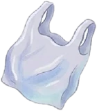
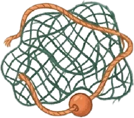
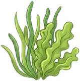
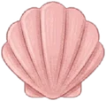

🕹️ How to swim
Hold your finger where you want Mo to go (or use the arrow keys). Find the
glowing currents and ride them: Mo zooms along! Pink stripes flow the wrong way, so swim around them.

Tap plastic bags and bottles to scoop them out with Kai's net. Don't let Mo bump into a bag!

Old fishing nets are tangly. Swim around them, or tap three times to pull one out.

Seagrass is turtle food. It charges ⚡ Turbo: a burst of speed, and nothing can bump you.

Shells line the fast currents. Use them to help Mo grow stronger.
💚 Be kind in the sea
Flying fish, dolphins, mullet and turtles are friends: swim close to say hi. Only trash gets scooped up.
Science note: real currents are much, much bigger than in the game, and a real trip from Orchid Island toward Japan takes days. Baby sea turtles really do swim hard and ride currents, and plastic and lost "ghost nets" really are a danger to them.